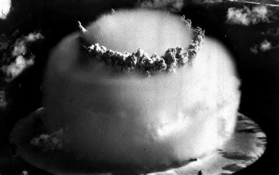
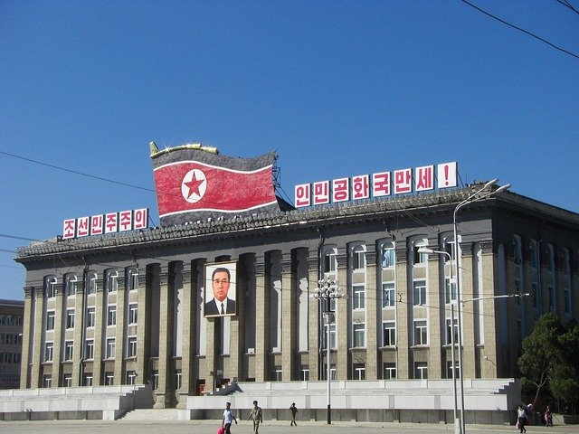

nuclear weapons: still a thing
|  |  | |
why we should be concernedwhile it almost seems too obvious to state, a nuclear war would be an apocalyptic event that would likely mark the end of (most) life on earth. this alone is cause for alarm, regardless of how remote the possibility of such an event may seem. however, delibrate warfare is not the only way the nuclear apocalypse may come to pass: since the development of these weapons in 1940s, hundreds of accidents worldwide have significantly increased the risk of nuclear war, and a few have come perilously close to setting the end of the world in motion. finally, contrary to popular belief, the nuclear threat has increased significantly in the last decade, with both the United States and Russia scrapping the arms control agreements between them and deciding to invest trillions of dollars into modernising their arsenals instead. |
why this has slid under the radarfor those of us born after the conclusion of the Cold War, worrying about the end of the world via nuclear war may seem decidedly retro. after all, the slow burn demise of climate change is the apocalypse of today: nuclear holocaust is what kept our parents up at night in the 1980s. however, this dismissal of the nuclear threat is misguided. the world still has thousands of nuclear warheads uncder military command, ready to end the world, and this risk hasn't disappeared because it isn't getting as much press coverage as it did at the height of the anti-nuke movement in the 1970s and 1980s. indeed, recent press coverage has focused on the 'newer' issues of North Korean nuclear tests and Iran potentially getting the bomb, while ignoring the larger issue: nuclear weapons still exist, in vast quantities, and no serious effort is being made to eliminate them. |
why we should careperhaps the death of the movement for disarmament was inevitable, given the end of the Cold War and the much ballyhooed 'peace dividend' that was expected to emerge from it, and the shift of attention towards other issues in the 1990s: terrorism, globalization, global warming. however, while we may have moved on (attendance at congressional hearings about nuclear weapons is depressingly low), our arsenals haven't gone anywhere, still waiting in silos, on aircraft and submarines, around the world, ready to kill us all, should that be desired by our leadership or a few people make some mistakes. in a world wracked by hunger, poverty, and disease, significant resources are still being invested into this machinery of death, and the US military is the world's largest polluter. resuming the push for disarmament would free up significant resources for investment in life, rather than death, and remove one source of horrific pain and destruction from the world, forever. |